Changes in PRIMAP-hist v2.6.1_final compared to v2.6_final for Lao People’s Democratic Republic
2025-03-19
Johannes Gütschow
Change analysis for Lao People’s Democratic Republic for PRIMAP-hist v2.6.1_final compared to v2.6_final
Overview over emissions by sector and gas
The following figures show the aggregate national total emissions excluding LULUCF AR6GWP100 for the country reported priority scenario. The dotted linesshow the v2.6_final data.
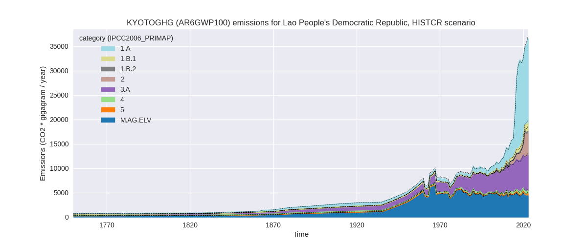
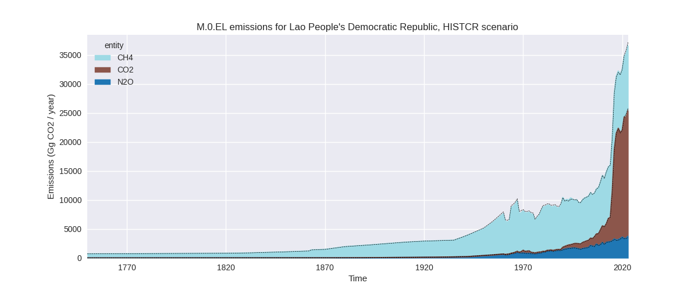
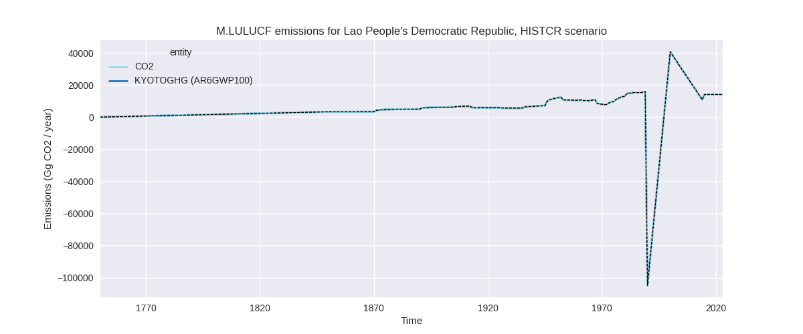
The following figures show the aggregate national total emissions excluding LULUCF AR6GWP100 for the third party priority scenario. The dotted linesshow the v2.6_final data.
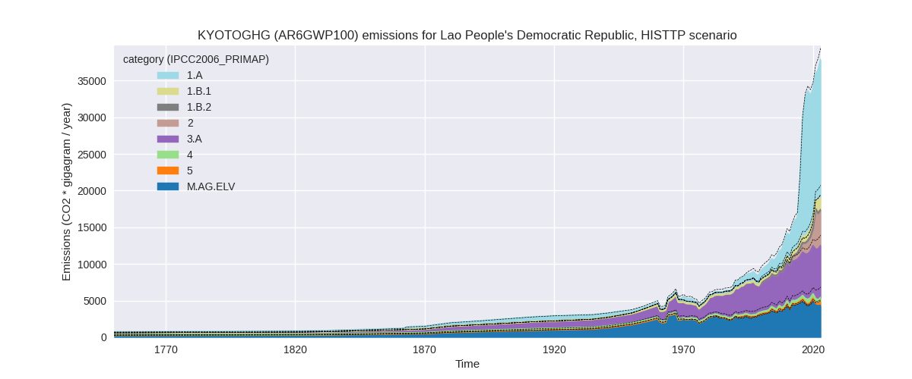
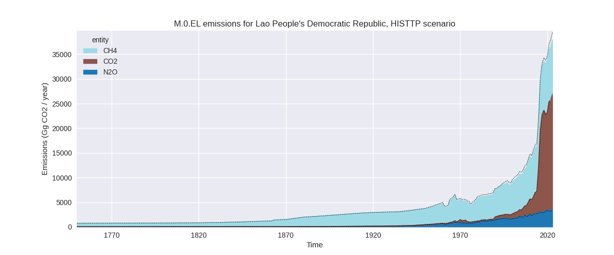
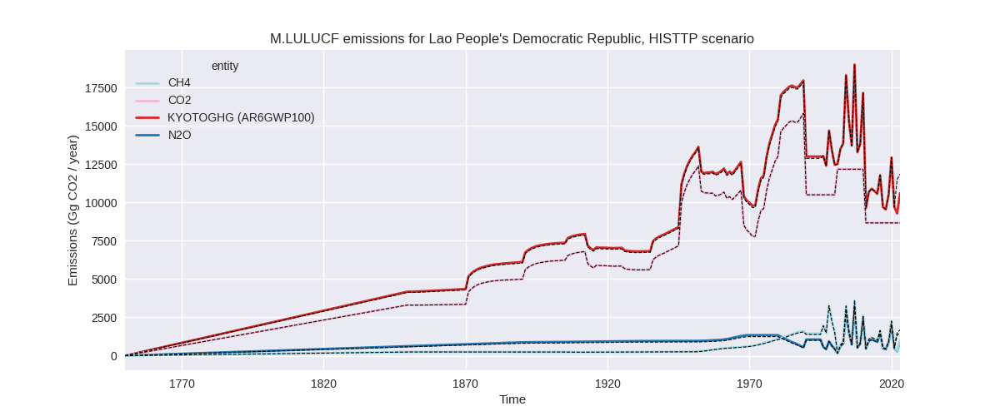
Overview over changes
In the country reported priority scenario we have the following changes for aggregate Kyoto GHG and national total emissions excluding LULUCF (M.0.EL):
- Emissions in 2023 have changed by -1.6%% (-595.68 Gg CO2 / year)
- Emissions in 1990-2023 have changed by -0.1%% (-16.60 Gg CO2 / year)
In the third party priority scenario we have the following changes for aggregate Kyoto GHG and national total emissions excluding LULUCF (M.0.EL):
- Emissions in 2023 have changed by -4.1%% (-1622.00 Gg CO2 / year)
- Emissions in 1990-2023 have changed by -3.7%% (-637.44 Gg CO2 / year)
Most important changes per scenario and time frame
In the country reported priority scenario the following sector-gas combinations have the highest absolute impact on national total KyotoGHG (AR6GWP100) emissions in 2023 (top 5):
- 1: 2, CO2 with -619.10 Gg CO2 / year (-11.2%)
- 2: M.AG.ELV, CH4 with -569.68 Gg CO2 / year (-19.6%)
- 3: 1.B.1, CH4 with 403.15 Gg CO2 / year (32.0%)
- 4: 5, N2O with 320.53 Gg CO2 / year (179.7%)
- 5: M.AG.ELV, N2O with -100.51 Gg CO2 / year (-4.8%)
In the country reported priority scenario the following sector-gas combinations have the highest absolute impact on national total KyotoGHG (AR6GWP100) emissions in 1990-2023 (top 5):
- 1: 2, CO2 with -36.67 Gg CO2 / year (-3.9%)
- 2: M.AG.ELV, CH4 with -35.15 Gg CO2 / year (-1.1%)
- 3: 5, N2O with 28.42 Gg CO2 / year (16.8%)
- 4: 1.B.1, CH4 with 26.40 Gg CO2 / year (5.7%)
- 5: M.AG.ELV, N2O with -5.24 Gg CO2 / year (-0.4%)
In the third party priority scenario the following sector-gas combinations have the highest absolute impact on national total KyotoGHG (AR6GWP100) emissions in 2023 (top 5):
- 1: 4, CH4 with -1073.99 Gg CO2 / year (-69.4%)
- 2: 2, CO2 with -619.10 Gg CO2 / year (-11.2%)
- 3: M.AG.ELV, CH4 with -567.07 Gg CO2 / year (-19.6%)
- 4: 1.B.1, CH4 with 403.15 Gg CO2 / year (32.0%)
- 5: 5, N2O with 320.53 Gg CO2 / year (179.7%)
In the third party priority scenario the following sector-gas combinations have the highest absolute impact on national total KyotoGHG (AR6GWP100) emissions in 1990-2023 (top 5):
- 1: 4, CH4 with -650.41 Gg CO2 / year (-68.3%)
- 2: 2, CO2 with -36.67 Gg CO2 / year (-3.9%)
- 3: M.AG.ELV, CH4 with -34.08 Gg CO2 / year (-1.5%)
- 4: 5, N2O with 28.42 Gg CO2 / year (16.8%)
- 5: 1.A, CH4 with 27.07 Gg CO2 / year (6.4%)
Notes on data changes
Here we list notes explaining important emissions changes for the country.
- No new country reported data has been included.
- Changes in the CR scenario are due to the updated third party data which plays a large role also in the CR scenario because country reported data only covers 1990, 2000, and 2014.
- The 2023 changes in the agricultural sector come from new FAO data which add information for 2022 and adjusts data for 2021. Because of the importance of the agricultural sector these changes also affect cumulative emissions.
- New EDGAR data introduces changes for 1.B.1, 5 and other sectors with smaller contribution to absolute emissions changes. Impacts on emissions in 1.B.1 and 5 are the same as for the TP time-series as there is no country reported data for the sectors.
- For the TP scenario changes are similar with the addition of a decrease in waste CH4 emissions of almost 70% which comes directly from the new EDGAR data.
Changes by sector and gas
For each scenario and time frame the changes are displayed for all individual sectors and all individual gases. In the sector plot we use aggregate Kyoto GHGs in AR6GWP100. In the gas plot we usenational total emissions without LULUCF.
country reported scenario
2023
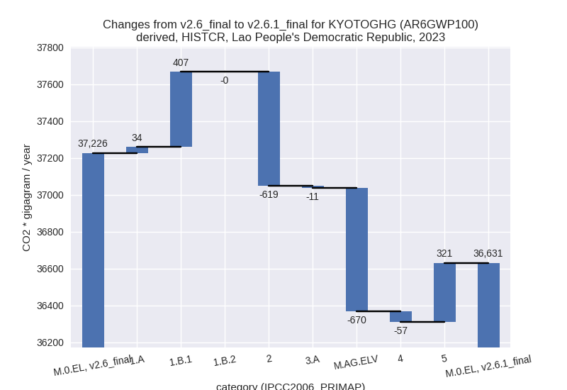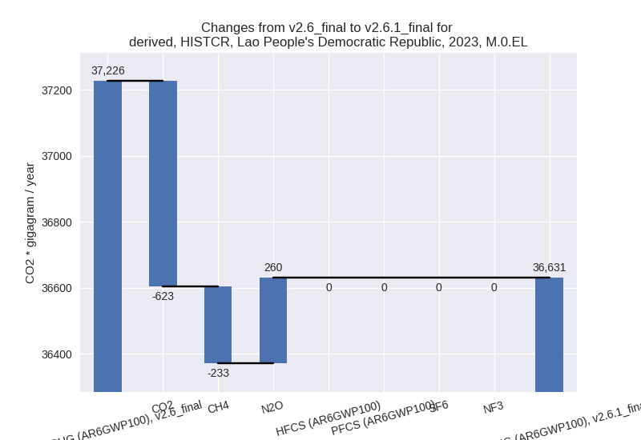
1990-2023
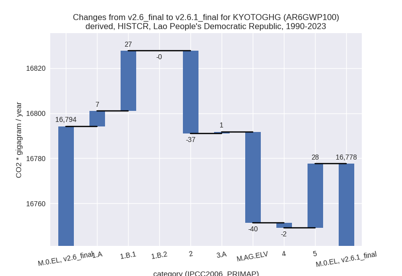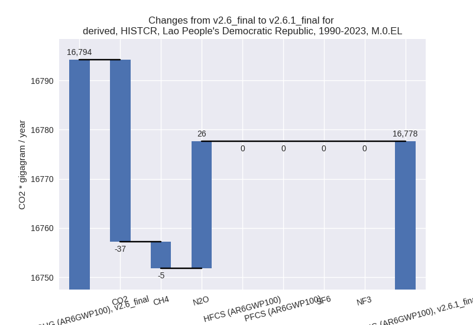
third party scenario
2023
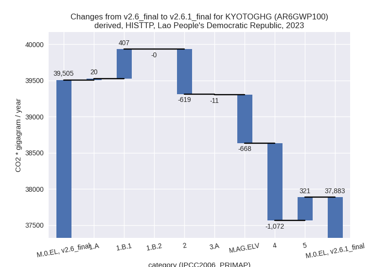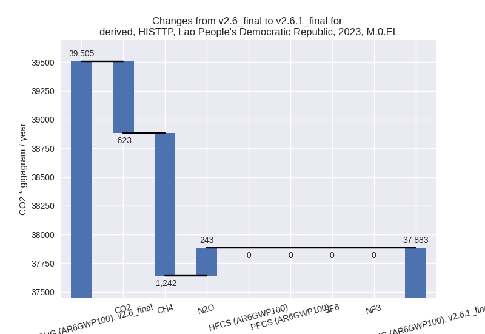
1990-2023
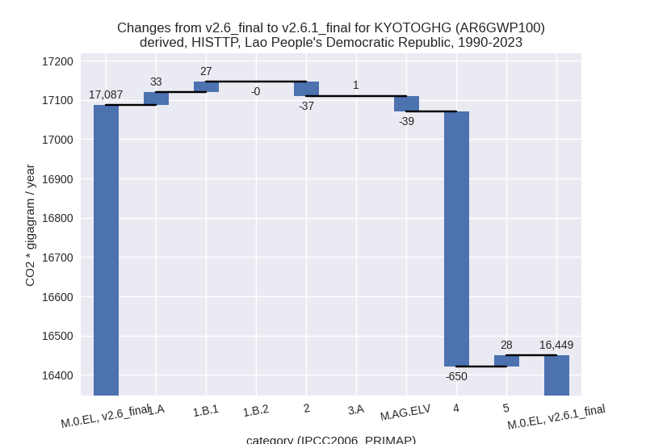
Detailed changes for the scenarios:
country reported scenario (HISTCR):
Most important changes per time frame
For 2023 the following sector-gas combinations have the highest absolute impact on national total KyotoGHG (AR6GWP100) emissions in 2023 (top 5):
- 1: 2, CO2 with -619.10 Gg CO2 / year (-11.2%)
- 2: M.AG.ELV, CH4 with -569.68 Gg CO2 / year (-19.6%)
- 3: 1.B.1, CH4 with 403.15 Gg CO2 / year (32.0%)
- 4: 5, N2O with 320.53 Gg CO2 / year (179.7%)
- 5: M.AG.ELV, N2O with -100.51 Gg CO2 / year (-4.8%)
For 1990-2023 the following sector-gas combinations have the highest absolute impact on national total KyotoGHG (AR6GWP100) emissions in 1990-2023 (top 5):
- 1: 2, CO2 with -36.67 Gg CO2 / year (-3.9%)
- 2: M.AG.ELV, CH4 with -35.15 Gg CO2 / year (-1.1%)
- 3: 5, N2O with 28.42 Gg CO2 / year (16.8%)
- 4: 1.B.1, CH4 with 26.40 Gg CO2 / year (5.7%)
- 5: M.AG.ELV, N2O with -5.24 Gg CO2 / year (-0.4%)
Changes in the main sectors for aggregate KyotoGHG (AR6GWP100) are
- 1: Total sectoral emissions in 2022 are 18054.84 Gg
CO2 / year which is 51.3% of M.0.EL emissions. 2023 Emissions have
changed by 2.4% (441.02 Gg CO2 /
year). 1990-2023 Emissions have changed by 0.6% (33.44 Gg CO2 / year). For 2023 the
changes per gas
are:
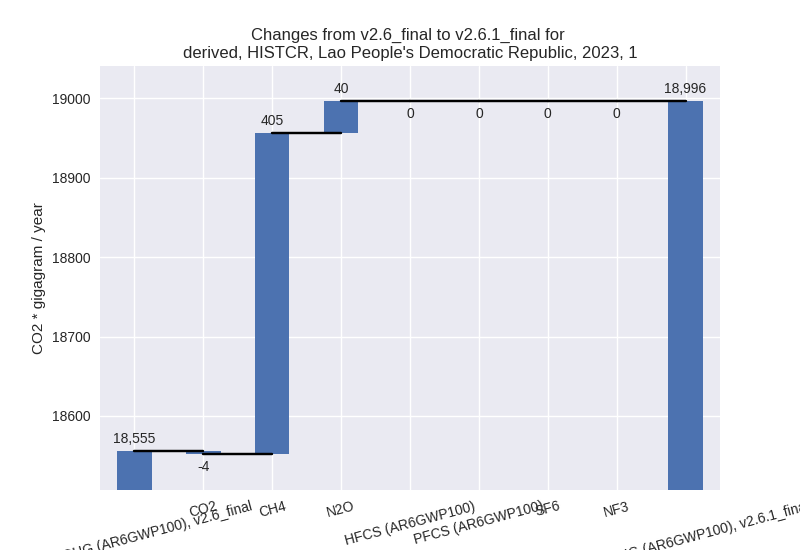
The changes come from the following subsectors:- 1.A: Total sectoral emissions in 2022 are 16402.64 Gg CO2 / year which is 90.8% of category 1 emissions. 2023 Emissions have changed by 0.2% (34.40 Gg CO2 / year). 1990-2023 Emissions have changed by 0.1% (6.80 Gg CO2 / year).
- 1.B.1: Total sectoral emissions in 2022 are 1652.20
Gg CO2 / year which is 9.2% of category 1 emissions. 2023 Emissions have
changed by 31.7% (406.62 Gg CO2 /
year). 1990-2023 Emissions have changed by 5.6% (26.63 Gg CO2 / year). For 2023 the
changes per gas
are:
For 1990-2023 the changes per gas are:
There is no subsector information available in PRIMAP-hist. - 1.B.2: Total sectoral emissions in 2022 are 0.00 Gg
CO2 / year which is 0.0% of category 1 emissions. 2023 Emissions have
changed by -100.0% (-0.00 Gg CO2 /
year). 1990-2023 Emissions have changed by -97.4% (-0.00 Gg CO2 / year). For 2023 the
changes per gas
are:
For 1990-2023 the changes per gas are:
There is no subsector information available in PRIMAP-hist.
- 2: Total sectoral emissions in 2022 are 4897.56 Gg
CO2 / year which is 13.9% of M.0.EL emissions. 2023 Emissions have
changed by -11.2% (-619.10 Gg CO2 /
year). 1990-2023 Emissions have changed by -3.9% (-36.67 Gg CO2 / year). For 2023 the
changes per gas
are:
For 1990-2023 the changes per gas are: - M.AG: Total sectoral emissions in 2022 are 11383.43
Gg CO2 / year which is 32.3% of M.0.EL emissions. 2023 Emissions have
changed by -5.5% (-681.13 Gg CO2 /
year). 1990-2023 Emissions have changed by -0.4% (-39.60 Gg CO2 / year). For 2023 the
changes per gas
are:
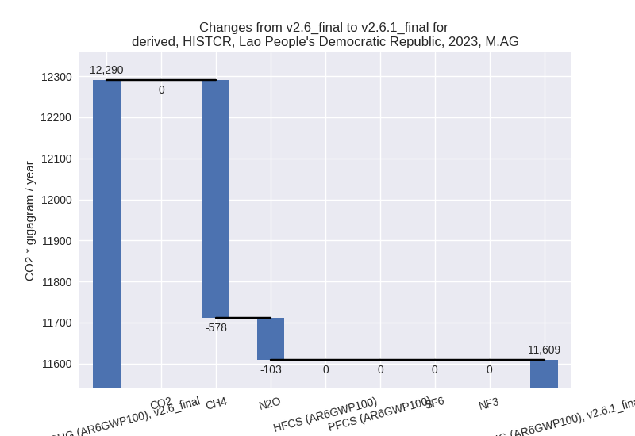
The changes come from the following subsectors:- 3.A: Total sectoral emissions in 2022 are 7085.40 Gg CO2 / year which is 62.2% of category M.AG emissions. 2023 Emissions have changed by -0.2% (-10.94 Gg CO2 / year). 1990-2023 Emissions have changed by 0.0% (0.78 Gg CO2 / year).
- M.AG.ELV: Total sectoral emissions in 2022 are
4298.03 Gg CO2 / year which is 37.8% of category M.AG emissions. 2023
Emissions have changed by -13.4%
(-670.19 Gg CO2 / year). 1990-2023 Emissions have changed by -0.9% (-40.38 Gg CO2 / year). For 2023 the
changes per gas
are:
There is no subsector information available in PRIMAP-hist.
- 4: Total sectoral emissions in 2022 are 615.58 Gg
CO2 / year which is 1.7% of M.0.EL emissions. 2023 Emissions have
changed by -8.3% (-56.99 Gg CO2 /
year). 1990-2023 Emissions have changed by -0.6% (-2.18 Gg CO2 / year). For 2023 the
changes per gas
are:

- 5: Total sectoral emissions in 2022 are 241.33 Gg
CO2 / year which is 0.7% of M.0.EL emissions. 2023 Emissions have
changed by 179.7% (320.53 Gg CO2 /
year). 1990-2023 Emissions have changed by 16.8% (28.42 Gg CO2 / year). For 2023 the
changes per gas
are:
For 1990-2023 the changes per gas are:
third party scenario (HISTTP):
Most important changes per time frame
For 2023 the following sector-gas combinations have the highest absolute impact on national total KyotoGHG (AR6GWP100) emissions in 2023 (top 5):
- 1: 4, CH4 with -1073.99 Gg CO2 / year (-69.4%)
- 2: 2, CO2 with -619.10 Gg CO2 / year (-11.2%)
- 3: M.AG.ELV, CH4 with -567.07 Gg CO2 / year (-19.6%)
- 4: 1.B.1, CH4 with 403.15 Gg CO2 / year (32.0%)
- 5: 5, N2O with 320.53 Gg CO2 / year (179.7%)
For 1990-2023 the following sector-gas combinations have the highest absolute impact on national total KyotoGHG (AR6GWP100) emissions in 1990-2023 (top 5):
- 1: 4, CH4 with -650.41 Gg CO2 / year (-68.3%)
- 2: 2, CO2 with -36.67 Gg CO2 / year (-3.9%)
- 3: M.AG.ELV, CH4 with -34.08 Gg CO2 / year (-1.5%)
- 4: 5, N2O with 28.42 Gg CO2 / year (16.8%)
- 5: 1.A, CH4 with 27.07 Gg CO2 / year (6.4%)
Changes in the main sectors for aggregate KyotoGHG (AR6GWP100) are
- 1: Total sectoral emissions in 2022 are 19472.22 Gg
CO2 / year which is 53.5% of M.0.EL emissions. 2023 Emissions have
changed by 2.1% (426.77 Gg CO2 /
year). 1990-2023 Emissions have changed by 0.9% (59.54 Gg CO2 / year). For 2023 the
changes per gas
are:
The changes come from the following subsectors:- 1.A: Total sectoral emissions in 2022 are 17820.02 Gg CO2 / year which is 91.5% of category 1 emissions. 2023 Emissions have changed by 0.1% (20.15 Gg CO2 / year). 1990-2023 Emissions have changed by 0.6% (32.91 Gg CO2 / year).
- 1.B.1: Total sectoral emissions in 2022 are 1652.20
Gg CO2 / year which is 8.5% of category 1 emissions. 2023 Emissions have
changed by 31.7% (406.62 Gg CO2 /
year). 1990-2023 Emissions have changed by 5.6% (26.63 Gg CO2 / year). For 2023 the
changes per gas
are:
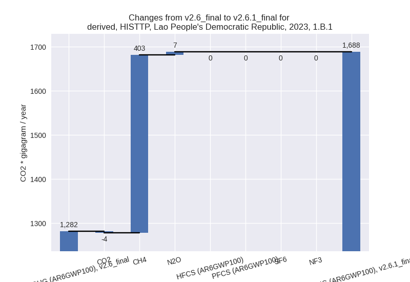
For 1990-2023 the changes per gas are:
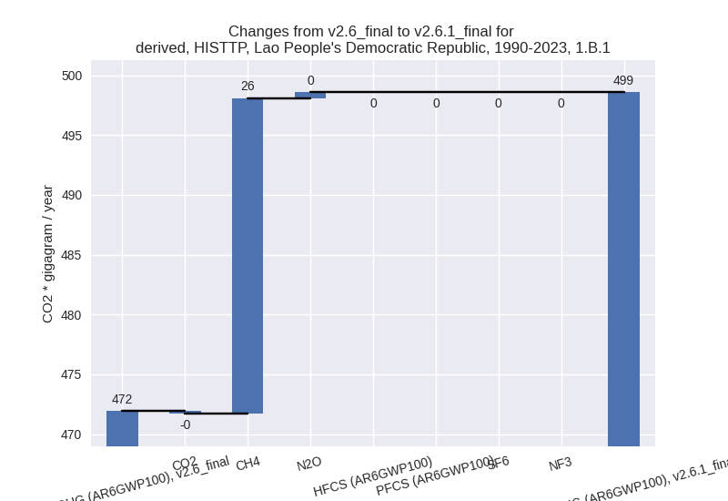
There is no subsector information available in PRIMAP-hist. - 1.B.2: Total sectoral emissions in 2022 are 0.00 Gg
CO2 / year which is 0.0% of category 1 emissions. 2023 Emissions have
changed by -100.0% (-0.00 Gg CO2 /
year). 1990-2023 Emissions have changed by -97.4% (-0.00 Gg CO2 / year). For 2023 the
changes per gas
are:
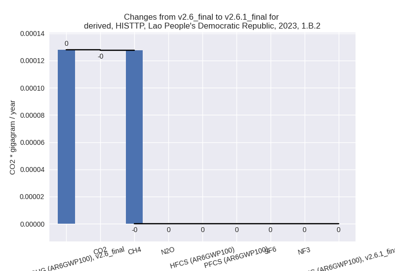
For 1990-2023 the changes per gas are:
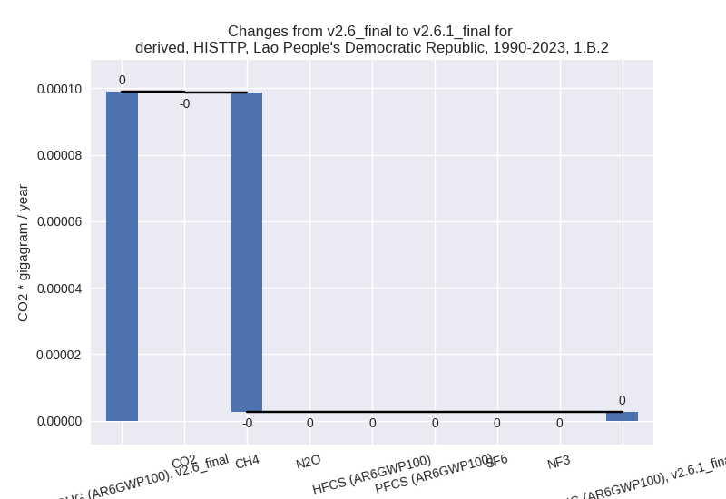
There is no subsector information available in PRIMAP-hist.
- 2: Total sectoral emissions in 2022 are 4897.56 Gg
CO2 / year which is 13.5% of M.0.EL emissions. 2023 Emissions have
changed by -11.2% (-619.10 Gg CO2 /
year). 1990-2023 Emissions have changed by -3.9% (-36.67 Gg CO2 / year). For 2023 the
changes per gas
are:
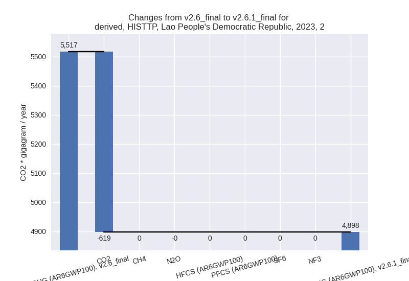
For 1990-2023 the changes per gas are:
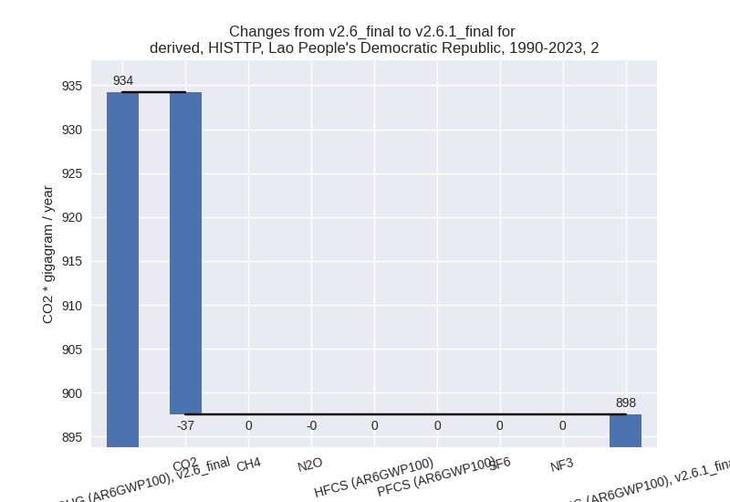 - M.AG: Total sectoral emissions in 2022 are 11196.65
Gg CO2 / year which is 30.8% of M.0.EL emissions. 2023 Emissions have
changed by -5.6% (-678.28 Gg CO2 /
year). 1990-2023 Emissions have changed by -0.4% (-38.56 Gg CO2 / year). For 2023 the
changes per gas
are:
The changes come from the following subsectors:- 3.A: Total sectoral emissions in 2022 are 6909.38 Gg CO2 / year which is 61.7% of category M.AG emissions. 2023 Emissions have changed by -0.2% (-10.70 Gg CO2 / year). 1990-2023 Emissions have changed by 0.0% (0.76 Gg CO2 / year).
- M.AG.ELV: Total sectoral emissions in 2022 are
4287.28 Gg CO2 / year which is 38.3% of category M.AG emissions. 2023
Emissions have changed by -13.3%
(-667.58 Gg CO2 / year). 1990-2023 Emissions have changed by -1.1% (-39.32 Gg CO2 / year). For 2023 the
changes per gas
are:
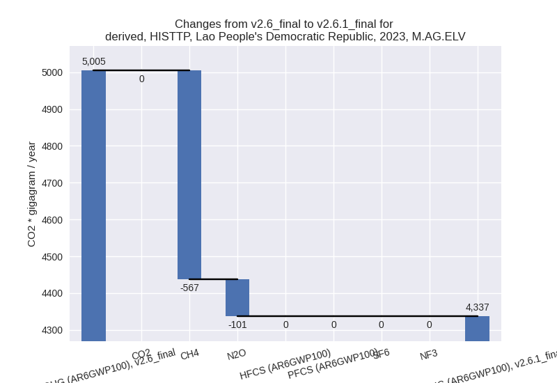
There is no subsector information available in PRIMAP-hist.
- 4: Total sectoral emissions in 2022 are 576.66 Gg
CO2 / year which is 1.6% of M.0.EL emissions. 2023 Emissions have
changed by -64.5% (-1071.91 Gg CO2 /
year). 1990-2023 Emissions have changed by -63.3% (-650.17 Gg CO2 / year). For 2023
the changes per gas
are:
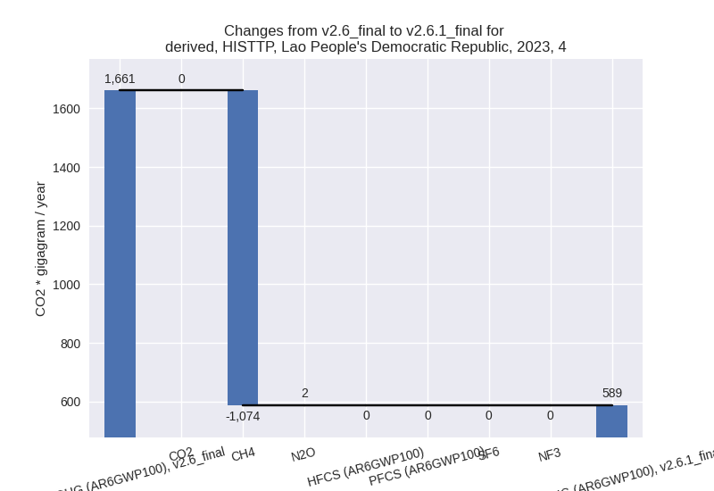
For 1990-2023 the changes per gas are: - 5: Total sectoral emissions in 2022 are 241.33 Gg
CO2 / year which is 0.7% of M.0.EL emissions. 2023 Emissions have
changed by 179.7% (320.53 Gg CO2 /
year). 1990-2023 Emissions have changed by 16.8% (28.42 Gg CO2 / year). For 2023 the
changes per gas
are:
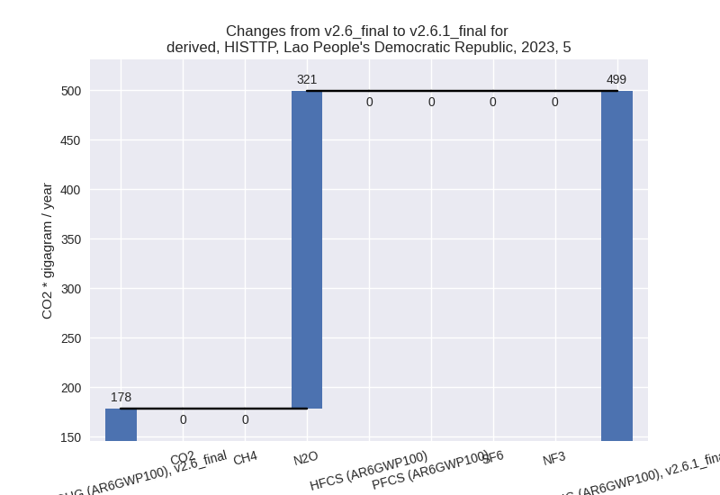
For 1990-2023 the changes per gas are:
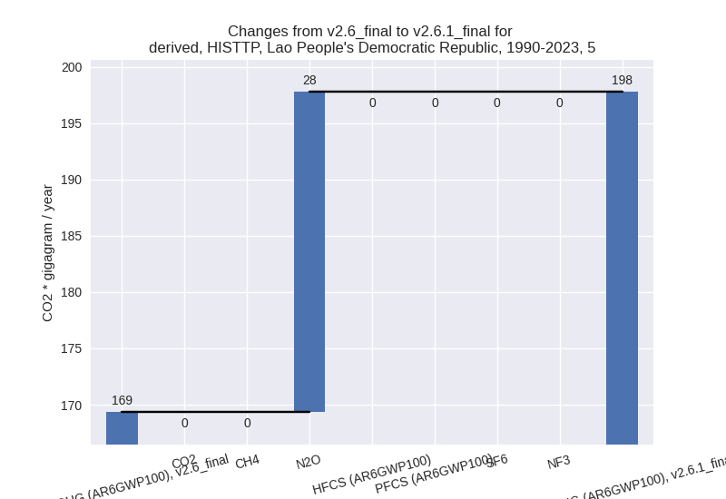